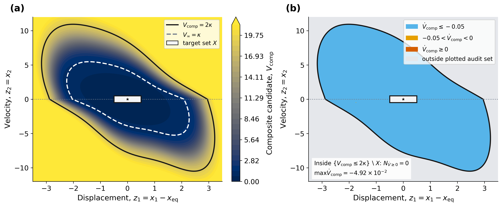
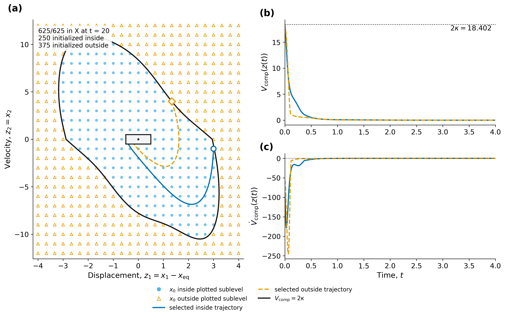
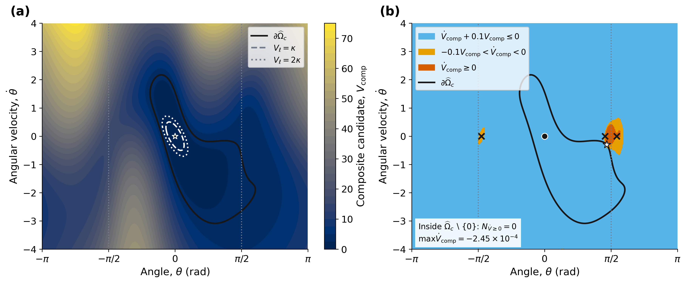
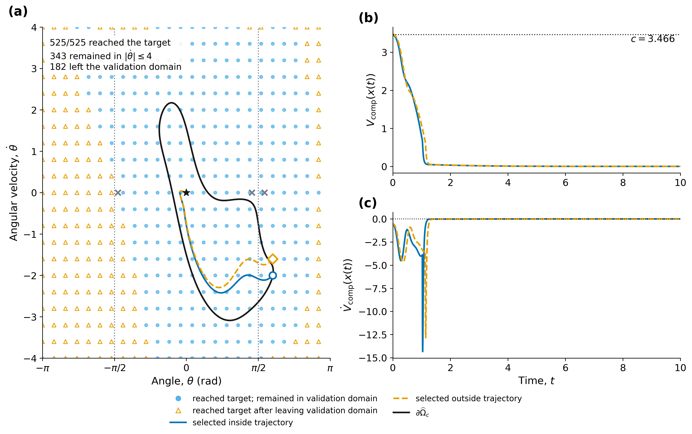
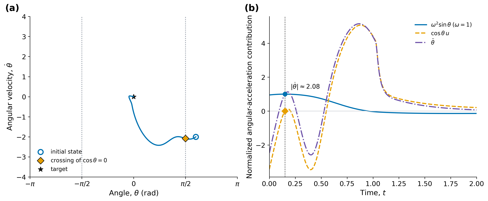

All numerical reproduction checks passed. No retraining.
Example 1: 625/625 in X at t=20; 250 inside the plotted composite sublevel. Example 2: c=3.466; 525/525 reach the target, 343 remain in the validation domain and 182 leave it.
Numerical checks, parameters and checkpoint hashes. Finite-grid observations do not establish a continuous-domain certificate. PNG and SVG files are generated from the arrays saved beside them.





Checkpoint sources and protocol · Other repository variants and the later checkpoint · Windows launcher